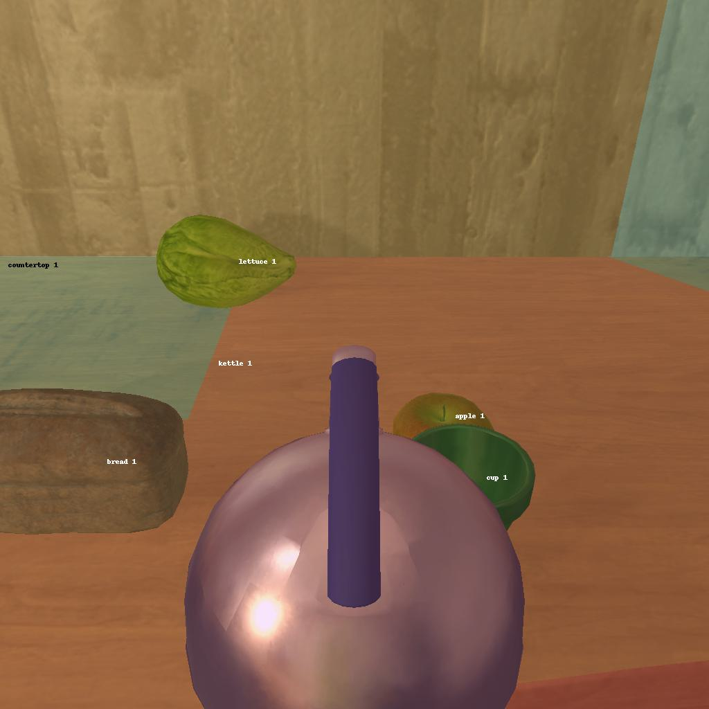

---------------------------------------------------------task: 26---------------------------------------------------------
--------------------------------------------------------------------------------------------------------------------------------------------------------------------
--------------------------------------------------------------------------------------------------------------------------------------------------------------------
Step:--------------------------------------------------------------------------12-------------------------------------------------------------------------------
----------------------------------------
VLM Prompt:
Image1:
Image2:
**Instruction**
1. Analyze the provided image to identify all visible household objects, focusing on those relevant to the task description "find two kettle and put them in cabinet."
2. Use the analysis of the image and the task hint "The agent must find an object of the desired type, pick it up, find the correct location to place it, put it down there, then look for another object of the desired type, pick it up, return to previous location, and put it down there with the other object." to answer the question: what is the most reasonable action in the choices for the task description "find two kettle and put them in cabinet"?
4. Decide and write the answer using the template: The answer is: (i): , where i is the real number. If there is no desired object in the image, search every place based on **Initial Observation** to find the object. And if no one is exactly correct, choose a similar answer.
**Initial Observation**
You are in the middle of a room. Looking quickly around you, you can see countertop (1), coffeemachine (1), cabinet (1-4), drawer (1-8), sink (1), sinkbasin (1), garbagecan (1), fridge (1), microwave (1), dresser (1), sidetable (1)
**Answer Choices**
(1): go to coffeemachine 1
(2): go to cabinet 1
(3): go to cabinet 2
(4): go to drawer 1
(5): go to sink 1
(6): go to sinkbasin 1
(7): go to cabinet 3
(8): go to garbagecan 1
(9): go to cabinet 4
(10): go to drawer 2
(11): go to fridge 1
(12): go to microwave 1
(13): go to dresser 1
(14): go to sidetable 1
(15): go to drawer 3
(16): go to drawer 4
(17): go to drawer 5
(18): go to drawer 6
(19): go to drawer 7
(20): go to drawer 8
(21): put kettle 1 in/on countertop 1
(22): examine countertop 1
**Answer**
Let's think step by step by following the instructions.
----------------------------------------
----------------------------------------
Original Response:
First, we need to identify all visible household objects in the provided images. Looking at both images, we can see the following objects:
- bread 1
- lettuce 1
- kettle 1
- apple 1
- cup 1
- countertop 1
The task description is to "find two kettle and put them in cabinet." Based on the initial observation, there are cabinets numbered 1 to 4 in the room. However, from the images provided, we can only see one kettle, which is "kettle 1."
The task hint indicates that the agent must find an object of the desired type (in this case, a kettle), pick it up, find the correct location to place it (a cabinet), put it down there, then look for another object of the desired type, pick it up, return to the previous location, and put it down there with the other object.
Considering the fact that we only see one kettle in the images, the first reasonable action would be to pick up the visible kettle and put it in a cabinet. However, there's no action in the choices that directly allows us to pick up the kettle. The closest action we can take is to put the kettle in/on the countertop, which is not what the task asks for. Since we cannot directly pick up the kettle in the choices provided, we must choose an action that would be the next best step towards completing the task.
Looking at the answer choices, the most reasonable next step would be to approach one of the cabinets since we eventually need to put the kettles there. Among the cabinet options (2, 3, 7, 9), any could be correct as the task does not specify which cabinet to use. However, we should choose the one that is most likely to be closest to the kettle's current location for efficiency.
Since the images do not provide enough information to determine the spatial arrangement of the room and the relative positions of the cabinets, we can only make an educated guess. Therefore, we will choose the action of going to one of the cabinets.
The answer is: (2): go to cabinet 1
This action will move the agent towards completing the task by approaching a potential location to place the kettle, after which the agent can look for the second kettle based on the initial observation of the room layout.
----------------------------------------
----------------------------------------
>>> Refine Original VLM Response and Get Pure Action: go to cabinet 1
This action will move the agent towards completing the task by approaching a potential location to place the kettle, after which the agent can look for the second kettle based on the initial observation of the room layout
----------------------------------------
-----------------------------------------------------------------
Running time: 22.534746646881104 seconds
Total Money: 13.106260000000004
-----------------------------------------------------------------
-----------------------------------------------------------------
Text Observation:Nothing happens.
-----------------------------------------------------------------
UNSUCCEED